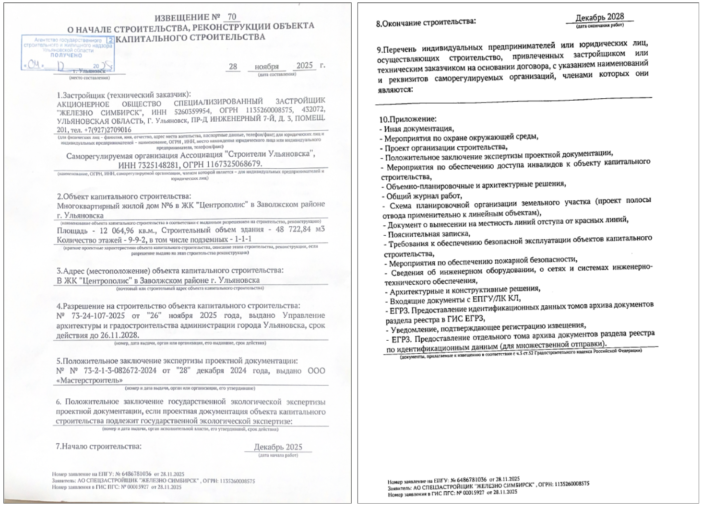

Объекты под ГСН
Чтобы определить, нужен ли на объекте государственный строительный надзор (ГСН), обратитесь к ст. 54 ГрК. Она устанавливает, что надзор осуществляется при строительстве объектов капитального строительства, проектная документация которых подлежит экспертизе в соответствии со ст. 49 ГрК, за исключением случая, предусмотренного частью 3.3 ст. 49 ГрК.
Анализ положений ст. 49 показывает, что под надзор попадает большое количество объектов, за исключением индивидуального жилищного строительства, блокированных домов (таунхаусов), отдельно стоящих объектов до 1500 м² и до двух этажей, не предназначенных для проживания людей и производственной деятельности (за исключением пп. 5 п. 2 ст. 49 ГрК).
Ранее документы в органы строительного надзора подавались в бумажном виде при личном присутствии представителя — оригиналы или заверенные копии. Для подачи обязательно готовилось извещение о начале строительства (реконструкции) объекта капитального строительства.

Сейчас, в связи с цифровой трансформацией, документы можно подать в электронном виде через портал Госуслуг. Однако весь комплект загрузить не получится, поэтому документацию все равно отвозят непосредственно в орган исполнительной власти, уполномоченный на строительный надзор.
Комплект документов при переходе с личной подачи на электронную не изменился и состоит из следующих документов:
- Копия разрешения на строительство
- Проектная документация в полном объеме
- Копия документа о вынесении на местность линий отступа от красных линий
- Общий и специальные журналы
- Положительное заключение экспертизы проектной документации
Извещение о начале строительства регистрируется в системе электронного документооборота органа исполнительной власти. Далее по распоряжению руководителя органа строительного надзора (создается внутренний документ) назначается и закрепляется инспектор (руководитель группы) на объекте. Количество инспекторов варьируется и определяется руководителем группы в зависимости от сложности и уникальности объекта. Обязательно руководителем группы выступает инспектор по общестроительным вопросам, а по узким направлениям — специалисты: электрик, ОВ, пожарный, газ и т. д. Стоит отметить, что официального задокументированного разделения нет; такая модель характерна для Ульяновской области, в других регионах чаще применяется принцип «один объект — один инспектор».
В следующем уроке подробно разберем пакет документов, направляемых в ГСН.